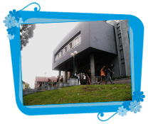

| Inicio | Objetivo | Voluntarias en el Hospital | Talleres | Eventos | Fotos | Grupo de Voluntarias | Colaboraciones |
 |
En la actualidad cuenta con más de setenta voluntarias activas, las que tienen un promedio de diez años desempeñando este tipo de actividad. Queremos puntualizar que las mismas no realizan ningún tipo de trabajo técnico.
- Tener más de 18 años de edad y un máximo de 65 años. |
| voluntariasdelpereira.org.uy ® 2006 - All rights reserved. |